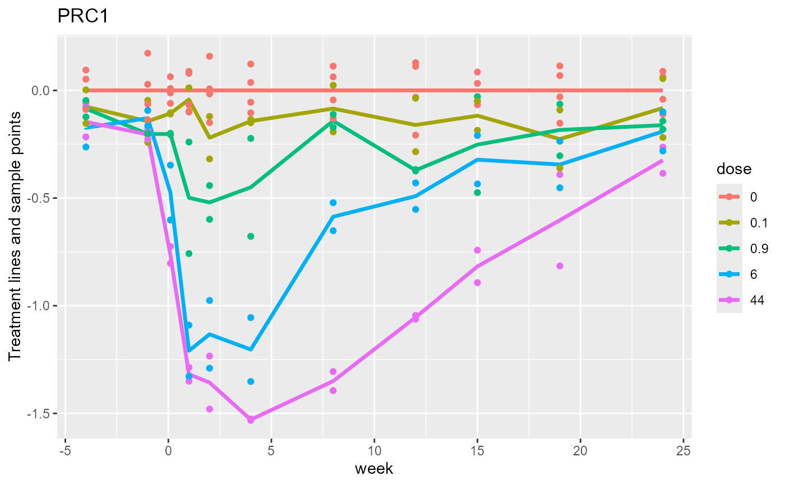

Calculate principal response curve (PRC) scores from vegan::rda, cca, dbrda or capscale objects
Source:R/PRC_scores.r
PRC_scores.RdPRC_scores calculates scores to display principal response curves with
scores for individual plots from a vegan constrained ordination object (cca.object).
PRC_scores(
object,
focal_factor_name = NULL,
referencelevel = NULL,
rank = 2,
flip = rep(FALSE, rank),
scaling = "ms",
data
)Arguments
- object
a
vegancca.object, a result ofrda,cca,dbrdaorcapscalewith model specified via a formula.- focal_factor_name
name of one or two focal factors (the treatment(s) of interest); if unspecified, derived from the formula in
objectvia the functionget_focal_and_conditioning_factors.- referencelevel
numeric or character level(s) to be used as reference of the
focal_factor_name(s); default: 1.- rank
number of axes to be computed; default 2.
- flip
logical value or vector; default: FALSE. Should the axes be flipped, i.e. reversed in orientation?
flipcan be numeric with values -1 and 1 for reverse and no reverse, respectively, i.e. multiply the scores by either -1 or 1.- scaling
character
c("ms", "ss"). Scales the axes of an RDA object to mean square species scores of 1 ("ms") or a sum of squares of 1 ("ss"). The only scaling for a CCA object is"ss"(weighted mean square = 1, with weight = species total abundance). For a dbrda object, there are no species scores and the scaling is like "ss". The default scaling ("ms"for RDA and"ss"for CCA) has the advantage that the PRC treatment and sample scores measure the effect sizes of the 'average' species as their (weigthed) mean square is 1 (sd = 1); it is the scaling used in Canoco5 (www.canoco5.com). Scaling"ss"is the default inprcompand used in ter Braak (2023).- data
data frame of the experimental design used in the call to
rdaorcca
Value
A named list:
PRCplus: a data frame that combines the design in
datawith the PRC and RDA/CCA scores with (_E) and without error (the unconstrained and constrained scores (sites and LC), respectively), and, finally, the reference scores. Note that PRC1_E = RDA1_E - RDA1_Ref, etc for other axesspecies: a matrix with the loadings with respect to the PRC scores; NULL if the
objectlacks loadings.reference_scores: a matrix with the scores of each unit in
datawith the level of the focal factor replaced by the reference levelfocal_factor_name: name of the focal factor in the call to
PRC_scoresreferencelevel: reference level in the call to
PRC_scorescoefficients: list of PRC-coefficients for each axis (matrix if rank is equal to 1)
focal_and_conditioning_factors: list of focal and conditioning factors; obtained from
get_focal_and_conditioning_factorsif argumentfocal_factor_namein the call is unset.terms: object$terms. See
cca.object.terminfo: object$terminfo. See
cca.object.method: object$method. See
cca.object.percExp: percentage variance of each axis out of the variance that can be explained by the predictors and covariates.
Details
PRC_scores uses scores to
calculate the loadings (species scores),if obtainable from the object, and the constrained and unconstrained sample scores
of the units in data. The PRC treatment and sample scores are obtained by subtracting the reference scores
from the constrained and unconstrained scores, respectively.
The reference scores are calculated by applying predict
with type = "lc" on newdata, which
equals data, except that the level of the focal factor of each unit is changed to the reference level.
By this simple method, prc scores can be applied with and without terms in Condition()
in the formula of the call to rda, cca,
dbrda or capscale.
There can thus be additional (perhaps quantitative) covariates,
A:B+ Condition(A+other_covariates) where the focal factor is B,
and also with three (instead of two factors) e.g.
with formula A*B*C + Condition(A*C) so as to display the A*C-dependent effects of focal factor B
on the multivariate response in the call to rda, cca,
dbrda or capscale.
The element object$'focal_and_conditioning_factors' in value is set
by applying the function get_focal_and_conditioning_factors
to the ordination model specified in object.
CCA-based PRC is useful in data with many zeroes and which are strictly compositional, i.e. have row sums that have no meaning for the question of interest (ter Braak and te Beest, 2022). A layman's example is that the weight of a cake is not important for its taste; taste depends on its composition only. CCA can be applied without log-transforming the data and thereby avoids the issue of replacement of zeroes (ter Braak and te Beest, 2022).
Examples
data(pyrifos, package = "vegan") #transformed species data from package vegan
#the chlorpyrifos experiment from van den Brink & ter Braak 1999
Design <- data.frame(week=gl(11, 12, labels=c(-4, -1, 0.1, 1, 2, 4, 8, 12, 15, 19, 24)),
dose=factor(rep(c(0.1, 0, 0, 0.9, 0, 44, 6, 0.1, 44, 0.9, 0, 6), 11)),
ditch = gl(12, 1, length=132))
mod_rda <- vegan::rda( pyrifos ~ dose:week + Condition(week), data = Design)
#>
#> Some constraints or conditions were aliased because they were redundant. This
#> can happen if terms are constant or linearly dependent (collinear):
#> 'dose44:week-4', 'dose44:week-1', 'dose44:week0.1', 'dose44:week1',
#> 'dose44:week2', 'dose44:week4', 'dose44:week8', 'dose44:week12',
#> 'dose44:week15', 'dose44:week19', 'dose44:week24'
Design_w_PRCs <- PRC_scores(mod_rda, focal_factor_name= "dose", referencelevel = "0",
rank = 2, data= Design, scaling ="ms", flip = FALSE)
plot_sample_scores_cdt(Design_w_PRCs, plot = "ditch")
#> The analysis is based on model
#> pyrifos~dose:week + Condition(week)
#> The current score, condition and treatment(s) are:
#> score (y-axis): PRC1
#> condition (x-axis): week
#> treatments (color ): dose
#> Set these arguments yourself if you wish otherwise.
 plot_sample_scores_cdt(Design_w_PRCs)
#> The analysis is based on model
#> pyrifos~dose:week + Condition(week)
#> The current score, condition and treatment(s) are:
#> score (y-axis): PRC1
#> condition (x-axis): week
#> treatments (color ): dose
#> Set these arguments yourself if you wish otherwise.
plot_sample_scores_cdt(Design_w_PRCs)
#> The analysis is based on model
#> pyrifos~dose:week + Condition(week)
#> The current score, condition and treatment(s) are:
#> score (y-axis): PRC1
#> condition (x-axis): week
#> treatments (color ): dose
#> Set these arguments yourself if you wish otherwise.

plot_sample_scores_cdt(Design_w_PRCs, plot = "Ditch")
#> The analysis is based on model
#> pyrifos~dose:week + Condition(week)
#> The current score, condition and treatment(s) are:
#> score (y-axis): PRC1
#> condition (x-axis): week
#> treatments (color ): dose
#> Set these arguments yourself if you wish otherwise.
#> Warning: Ditch is not a variable in object$PRCplus